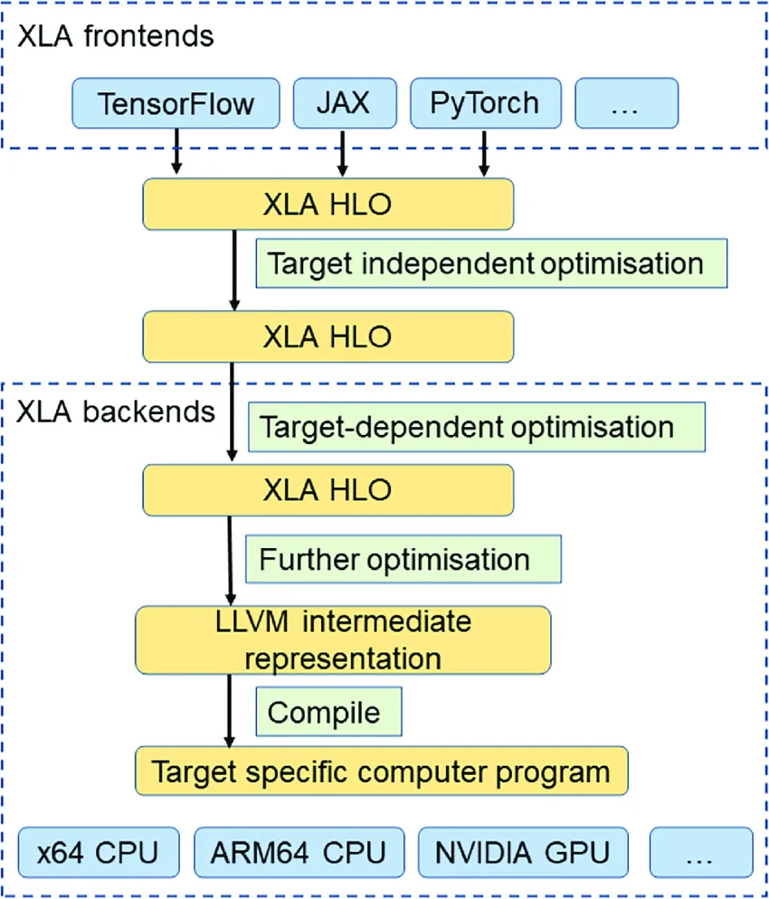

OpenXLA
NOTE: This guideline is intended to introduce XLA concepts. See NextPluggableDevice and Intel® Extension for OpenXLA* for more details on the usage and the implementation.
Overview
XLA (Accelerated Linear Algebra) is an open-source machine learning (ML) compiler for GPUs, CPUs, and ML accelerators.
XLA is part of the OpenXLA project – an ecosystem of open-source compiler technologies for ML that’s developed collaboratively by leading ML hardware and software organizations. Figure 1 shows the high-level compilation flow and architecture of OpenXLA.
The XLA compiler takes models from popular ML frameworks, and optimizes them for high-performance execution across different hardware platforms including GPUs, CPUs, and ML accelerators.
 Fig. 1 OpenXLA Overview
Fig. 1 OpenXLA Overview
|
NOTE: Intel® Extension for TensorFlow* integrates the Next Pluggable Device and adopts a uniform Device API PJRT as the supported device plugin mechanism to implement Intel GPU backend for OpenXLA support on TensorFlow frontend. While Intel® Extension for OpenXLA* leverages PJRT API to support and optimize JAX frontend on Intel GPU.
Objectives
The fundamental objectives of XLA including:
Improve execution speed: Compile subgraphs to reduce the execution time of short-lived ops and eliminate overhead from the runtime, fuse pipelined operations to reduce memory overhead, and specialize known tensor shapes to allow for more aggressive constant propagation.
Improve memory usage: Analyze and schedule memory usage, eliminating many intermediate storage buffers.
Reduce reliance on custom ops: Remove the need for many custom ops by improving the performance of automatically fused low-level ops to match the performance of custom ops that were originally fused by hand.
Improve portability: Make it relatively easy to write a new backend for novel hardware, so that a large fraction of ML models can run unmodified on that hardware. This is in contrast with the approach of specializing individual monolithic ops for new hardware, which requires models to be rewritten to make use of those ops.
How it works
The XLA compiler takes model graphs from ML frameworks defined in StableHLO and compiles them into machine instructions for various architectures. StableHLO defines a versioned operation set (HLO = high level operations) that provides a portability layer between ML frameworks and the compiler.
In general, figure 2 shows the compilation process that converts the model graph into a target-optimized executable:
|  Fig. 2 XLA compilation workflow and optimization steps |
XLA performs several built-in optimization and analysis passes on the StableHLO graph that are target-independent. During this optimization stage, XLA also converts the StableHLO dialect into an internal HLO dialect.
XLA sends the HLO computation to a backend for further HLO-level optimizations, this time with target-specific information and needs in mind. At this stage, backends may also pattern-match certain operations or combinations thereof to optimized library calls.
The backend then performs target-specific code generation. The CPU and GPU backends included with XLA use LLVM for low-level IR, optimization, and code generation. These backends emit the LLVM IR necessary to represent the HLO computation in an efficient manner, and then invoke LLVM to emit native code from this LLVM IR.
XLA’s architecture encompasses a series of steps, from applying independent and dependent optimizations, utilizing the LLVM framework, to generating efficient machine code.
Example
This example showcases the speedup on BERT-base inference workload with XLA enabled on Intel® Data Center GPU Max 1550.
NOTE: This example only applies to stock TensorFlow* >=2.15.0 and Intel® Extension for TensorFlow* >=2.15.0.0.
git clone https://github.com/IntelAI/models.git intel-models && cd intel-models
export ITEX_AUTO_MIXED_PRECISION=1
export ITEX_AUTO_MIXED_PRECISION_DATA_TYPE='FLOAT16'
cd models/language_modeling/tensorflow/bert_large/inference
export BATCH_SIZE = 1
export OUTPUT_DIR = ./output
export GLUE_DIR = /path/to/glue_dataset
export BERT_BASE_DIR = /path/to/bert_base_model
python3 run_classifier.py \
--precision=fp32 \
--predict_batch_size=${BATCH_SIZE} \
--output_dir=${OUTPUT_DIR} \
--task_name=MRPC \
--do_train=False \
--do_predict=True \
--data_dir=${GLUE_DIR}/MRPC \
--vocab_file=${BERT_BASE_DIR}/vocab.txt \
--bert_config_file=${BERT_BASE_DIR}/bert_config.json \
--max-seq-length=128 \
--do_lower_case=True \
--mode=benchmark \
--experimental_gelu=False
To enable PJRT plugin compiler for XLA compilation, you can easily set the following environment variable before executing run_classifier.py, without any code modifications:
$ export TF_XLA_FLAGS="--tf_xla_use_device_api=true --tf_xla_auto_jit=2"
NOTE: Enabling XLA does not necessarily lead to better performance. It is recommended to compare the performance with or without JIT compilation on the original model to choose the best way. Please refer official blog from Google for more details on performance improvement of XLA:
 Fig. 3 The speedup/slowdown of TensorFlow plus XLA vs TensorFlow without XLA on Google-internal benchmarks
Fig. 3 The speedup/slowdown of TensorFlow plus XLA vs TensorFlow without XLA on Google-internal benchmarks
|
The data is a list of results for fp16 and fp32 models, sorted by speedup:
fp32 results: [0.86 0.94 0.94 0.97 0.98 0.99 0.99 0.99 1.00 1.01 1.01 1.01 1.01 1.02 1.04 1.05 1.06 1.06 1.07 1.07 1.08 1.08 1.08 1.09 1.09 1.10 1.10 1.11 1.11 1.11 1.12 1.12 1.12 1.13 1.15 1.15 1.18 1.18 1.20 1.27 1.30 1.30 1.32 1.37 1.40 1.41 1.43 1.44 1.52]
fp16 results: [1.10 1.32 1.41 1.47 1.48 1.55 1.56 1.59 1.63 1.64 1.64 1.67 2.07 2.51 3.09]